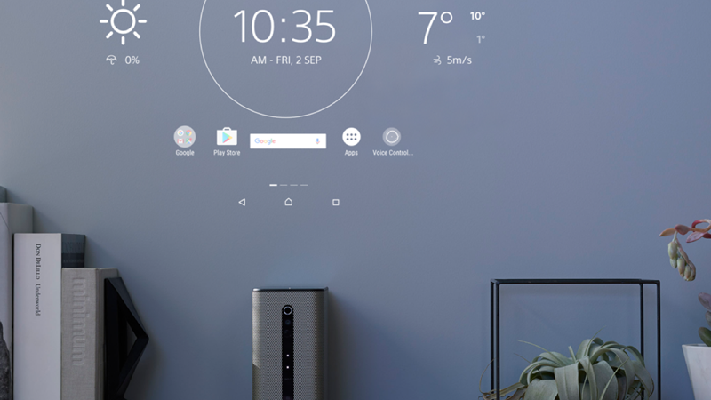

Project Overview
Challenged a minimal design that blends into spaces and a visual design that complements product limitations, as an approach to transforming smartphones into home appliances.

Responsibilities
Proposed use cases as a communication device that blends into spaces, interaction design, visual design.
Achievements
Received numerous design awards, including the Good Design Gold Award, iF Design Award Red Dot Best of Best, and DFA Gold Award.
Staff: Creative Director: Daisuke Ishii, UX Designers: Masanori Matsushima / Simon Henning, ID Designer: Arinobu Ueda, CD Designer: Chihiro Aoshima
Tools: ketch / Adobe AfterEffects / JavaScript / HTML5